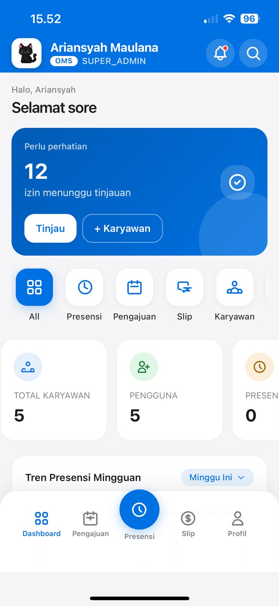

(©2026 — PRODUCT SYSTEM)
BUILT FOR INDONESIAN UMKM
ARIAN SYSTEM
OS07 ROLESRole-based access
Kami menyatukan operasional, transaksi, tim, stok, dan keuangan agar bisnis bergerak dengan kontrol yang lebih jelas.
PLATFORM OPERASIONAL BERBASIS WEB
UNTUK UMKM DAN RETAIL
01Operational Management
02Point of Sale
03People & Payroll
04Finance & Control
POSINVENTORYHRPAYROLLFINANCEKPI
OPERATIONS✳TRANSACTIONS✳INVENTORY✳PEOPLE✳FINANCE✳CONTROL✳
OPERATIONS✳TRANSACTIONS✳INVENTORY✳PEOPLE✳FINANCE✳CONTROL✳
ONE WORKSPACE FOR THE DETAILS
THAT MOVE THE BUSINESS.
OPERATIONS,
CONNECTED.
ONE/ SOURCE OF TRUTH
Arian System menghubungkan pekerjaan yang terjadi di outlet, gudang, HR, dan finance—dengan status, role, approval, dan jejak yang dapat ditinjau kembali.
02WORK MODES
OMS + POS
OMS + POS
07VERIFIED
USER ROLES
USER ROLES
10CORE
MODULES
MODULES
REAL SURFACES, RECREATED FROM
THE ACTUAL APPLICATION.
Product (06)
Dari kasir sampai payroll, setiap surface dibuat untuk memberi konteks pada pekerjaan—bukan sekadar menampilkan data.
POINT OF SALESHIFT ACTIVE
Keranjang
Kopi Susu ×2
Roti Bakar ×1
TotalRp 58.000!
04 itemStok perlu dicek
ProdukStokStatus
Kopi Susu5LOW
Roti Bakar32SAFE
Air Mineral0OUT
PEOPLE OPERATIONSPresensi hari ini
94%AS
Arian SaputraMasuk · 08:12
HADIRNR
Nadia RahmaMasuk · 08:24
HADIRRD
Rudi DarmaPengajuan izin
REVIEWPHOTO + GPS
PAYROLL READY
✓APPEND-ONLY
ACTIVITY
TRACE
Stock adjustmentPending approval
Leader approvedPIN verified
Record committedAudit log created
INPUT→OPERATE→MONITOR→APPROVE→AUDIT→
INPUT→OPERATE→MONITOR→APPROVE→AUDIT→
CONTROL THAT LIVES INSIDE
THE DAILY WORKFLOW.
WE TURN ACTIVITY
INTO CONTROL
Operational Management
Kelola aktivitas bisnis, outlet, tim, shift, presensi, dan pengajuan dalam satu struktur kerja.
OMS · HR · SHIFTTransaction Control
Proses POS, transaksi pending, pembayaran, pembatalan ber-PIN, dan laporan penjualan.
POS · QRIS · APPROVALInventory Visibility
Pantau mutasi, stok menipis, adjustment, goods receipt, supplier, purchase order, dan stock opname.
STOCK · PO · OPNAMEFinance & Audit
Jurnal, buku besar, invoice, laporan, role permission, approval, dan audit trail append-only.
FINANCE · RBAC · AUDITPRICING
BULANAN
TAHUNAN
Starter
UNTUK UMKM DENGAN SATU OUTLET YANG INGIN MERAPIKAN PENJUALAN, STOK, DAN TIM.
Rp249.000/BULAN
- 1 OUTLET & HINGGA 10 PENGGUNA
- POS & SHIFT KASIR
- PRODUK, STOK & PERINGATAN STOK MENIPIS
- ABSENSI & DATA KARYAWAN
- LAPORAN PENJUALAN DASAR
- ROLE AKSES DASAR
Growth
PALING POPULERUNTUK BISNIS YANG MULAI MEMILIKI BEBERAPA OUTLET DAN MEMBUTUHKAN KONTROL OPERASIONAL.
Rp649.000/BULAN
- HINGGA 3 OUTLET & 30 PENGGUNA
- SEMUA FITUR STARTER
- PEMBELIAN, SUPPLIER & STOCK OPNAME
- STOCK TRANSFER ANTAR OUTLET
- PAYROLL, KOMPENSASI & KPI
- APPROVAL & PIN UNTUK AKTIVITAS PENTING
Scale
UNTUK BISNIS MULTI-OUTLET YANG MEMBUTUHKAN LAPORAN TERPUSAT, FINANCE, DAN AUDIT.
Rp1.799.000/BULAN
- HINGGA 10 OUTLET & 100 PENGGUNA
- SEMUA FITUR GROWTH
- JURNAL, LEDGER & INVOICE
- ROLE & AKSES PER OUTLET
- AUDIT TRAIL & REVIEW FRAUD
- LAPORAN GABUNGAN SEMUA OUTLET
PRODUCT PRINCIPLE · VERIFIED IN SOURCE
“CONTROL IS NOT A REPORT AT THE END. IT LIVES INSIDE EVERY ACTION.”
Permission menentukan siapa yang bertindak. Approval menentukan siapa yang meninjau. Audit menyimpan apa yang benar-benar terjadi.
FROM SETUP TO DECISION,
ONE CONTINUOUS FLOW.
Our Process
Arian System mengubah aktivitas harian menjadi informasi yang dapat ditinjau dan ditindaklanjuti.
STEP 01 · FOUNDATION
Susun bisnis, outlet, role, dan data utama.
Business unit, departemen, outlet, karyawan, produk, shift, role, dan permission menjadi fondasi kerja bersama.
OUTLET→ROLE→DATA
STEP 02 · DAILY WORK
Jalankan operasional dari satu sistem.
Tim melakukan presensi, kasir membuka shift, transaksi berjalan, stok bergerak, dan pengajuan masuk.
STEP 03 · SIGNALS
Lihat hal yang perlu perhatian.
Dashboard, low-stock alert, transaksi pending, laporan, notifikasi, dan approval mengangkat sinyal penting.
04ITEMS NEED
ATTENTION
ATTENTION
STEP 04 · DECISION
Putuskan dengan konteks dan jejak.
Setiap keputusan sensitif memiliki status, approver, permission, dan audit trail yang dapat ditelusuri.
REQUESTAPPROVEAUDIT
BUILT FOR EVERY LAYER
OF THE OPERATION.
BUILT FOR
REAL WORK.
Different roles.
One operational language.
STRONG CONTROL.
CLEAR RESPONSIBILITY.
LESS UNCERTAINTY.
Setiap role melihat konteks yang relevan dengan pekerjaannya.
07USER ROLES
02WORK MODES
No customer metrics invented.
Only verified product capability.
PRODUCT DECISIONS FOUND
IN THE REAL CODEBASE.
Latest Insights
Tiga keputusan teknis yang menjaga Arian System tetap responsif dan dapat dioperasikan di lingkungan nyata.
PAYROLL→QUEUE
5 MINCACHED SIGNALS
ONLINEOFFLINEPWA
[08] FAQStraight answers.
Straight answers.
No invented claims.
Cocok. Arian System membantu UMKM mengatur pekerjaan sehari-hari, seperti penjualan, stok, karyawan, dan keuangan, dalam satu tempat.
Modul utamanya mencakup penjualan (POS), stok dan pembelian, karyawan dan payroll, keuangan, KPI, komunikasi tim, stock opname, serta sinkronisasi data.
Setiap pengguna hanya bisa mengakses bagian yang sesuai tugasnya. Aktivitas penting dapat memerlukan persetujuan dan PIN, sementara semua perubahan tercatat agar mudah ditinjau.
Ya. Saat ini tersedia tiga paket: Starter mulai Rp249.000, Growth Rp649.000, dan Scale Rp1.799.000 per bulan. Batas outlet dan pengguna berbeda di tiap paket.
[09] CONTACT
READY TO SEE THE FLOW?
STILL UNSURE?
LET’S TALK.
Mulai dari percakapan tentang outlet, role, dan pekerjaan yang paling ingin Anda rapikan.
Lihat Cara Memulai↗